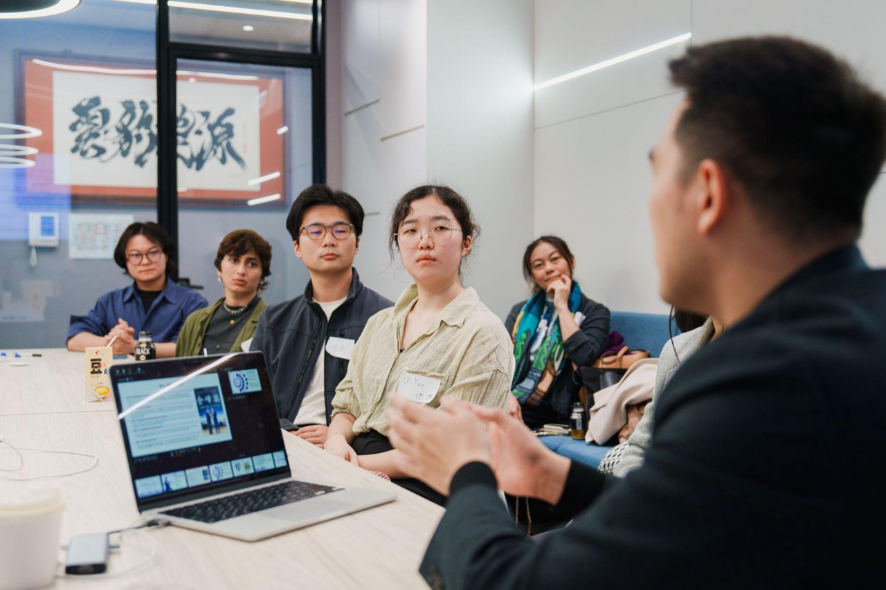
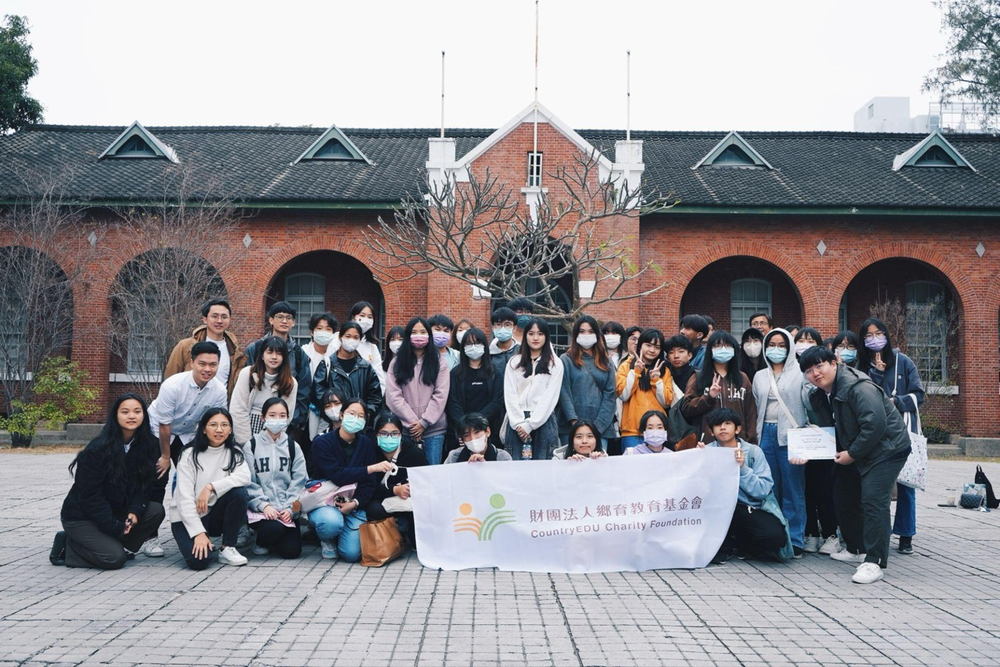
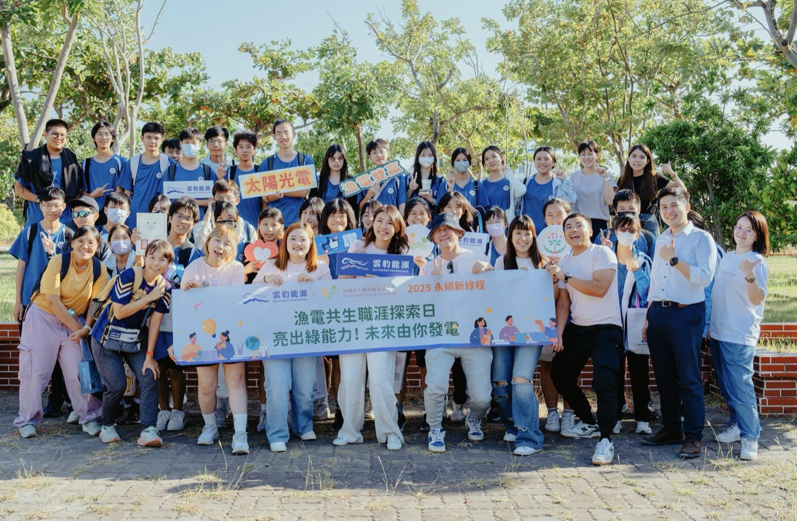

2016
看見落差，種下起點
看見台灣各地教育資源與資訊落差，種下鄉育關注地方教育的起點。

Our Journey
發展歷程 Our Journey
鄉育的起點，來自對台灣教育現場的長期觀察。從看見城鄉與資訊落差，到實際走進地方、陪伴大學生探索學習歷程與未來方向，鄉育一步步將理念化為課程、工作坊、校園合作與跨界行動。
Milestones
2016
看見台灣各地教育資源與資訊落差，種下鄉育關注地方教育的起點。
2020
走入地方第一線，訪談與接觸超過 1,000 位學子與青年，確認長期教育陪伴的必要。

2021
回應 108 課綱，在台南北門農工與北門高中啟動學習歷程檔案工作坊。

2022
鄉育教育基金會正式成立，將「育才零距離」從公益行動推進為長期組織使命。

2023
合作擴展至雙北、新竹、桃園、台中、嘉義、台南、高雄、花蓮等地，推動學習歷程講座與深度工作坊。

2024
新增苗栗、雲林區域合作，並首次與成功大學合作，培訓大專院校學生成為高中生引導員。
2025
完成勸募字號申請，服務延伸至大學；並與高雄師範大學事業經營學系完成首次 16 週職涯探索選修課程。

2026
建立偏鄉高中教師培力、尋路計畫與線上培力三大服務線，並與成功大學教育研究所展開學術研究；累積服務 1,668 位學生、35+ 所學校、106+ 場次。

Next
鄉育的下一頁，需要更多人一起寫。無論你是大學生、學校、企業或支持者，都能在這裡找到自己的位置。
了解多元的參與方式，或先認識鄉育更完整的使命與方法。